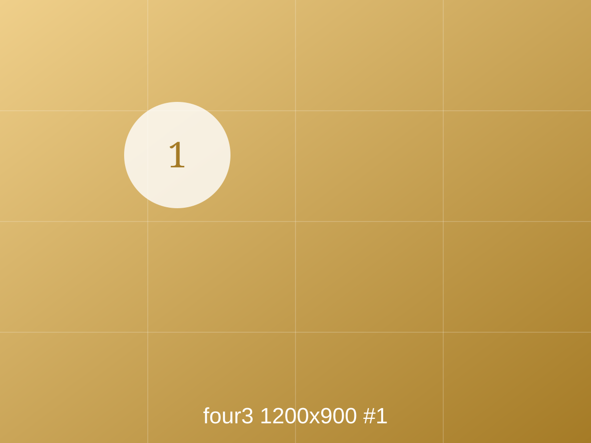

Look first · no notes yet
Lettuce roots can grow with no soil at all.


¿Qué es diferente?


Both photographs: Wikimedia Commons · CC BY-SA 4.0

Wikimedia Commons · CC BY-SA 4.0

Follow the water from 2 back to the tank. Wikimedia Commons · CC BY 2.0